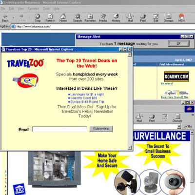
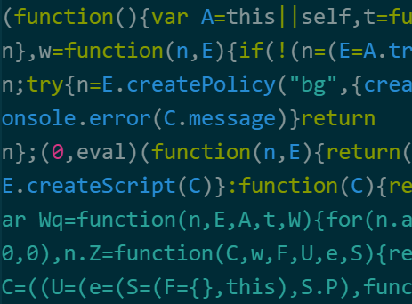
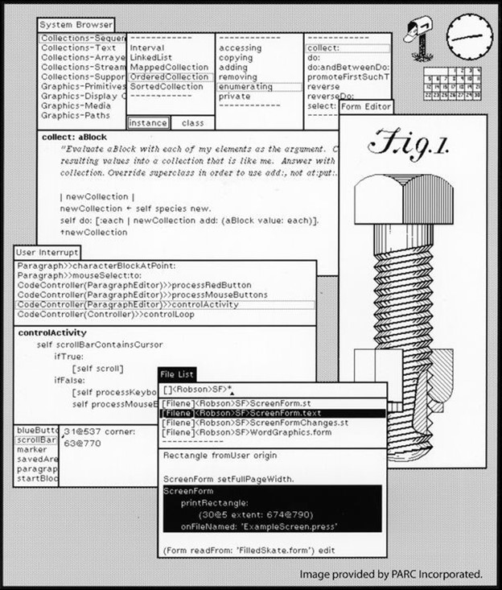

Popup from hell
Reflections on the most annoying 1990s program
Tomas Petricek, University of Kent
tomas@tomasp.net | @tomaspetricek
Pop-ups in the 1990s
Origins of pop-up ads
- Created at Tripod.com
- Hosting site like Geocities
- Disassociate ad from content
Normal web design
- Custom dialog windows
- Manage window size & look
- Normal programs use windows!
Technical side
JavaScript first appeared in the Netscape Navigator browser in 1995
window.open and window.onunload exist from version 1
Social side
Geocities
Fairly well-documented creative online community of the 1990s
DEMO
Popup from hell

No more fun :-(
Popup blocking commonplace in
the early 2000s
Blocks popups on page load, unload and timer events, but not on click

Well, actually...
Same user experience, recreated using harder to block technique
Reflections
What is a program
What is a program
Popup from hell that cannot be closed
Source code from my highschool years?
Other equivalent code from the web?
More general idea of an evil popup?
System change prevents it from working!
Environment determines if it is "bad"
REFLECTIONS
Two eras of the web
1990sView source Copy & paste Windows work! |
2010sCompiled code Custom elements WASM + Canvas |
Google Docs
Replace built-in editable element with custom code (May 2021)
Better performance
Accessibility issues
Affects extensions
Atom vs Code
Mini-editor war
of the 2010s
Code enforces information hiding for performance, limits unexpected extensibility
REFLECTIONS
Evolution of systems
Growth of opacity
JavaScript code
- From small clear code
- To compiled and minified
- And compiled assembly
Browser element use
- From window.open to DOM
- And custom canvas element
- There are exceptions!
Embedding
Use of system structure for program aspects
Program running in a system
Web page embedded in a browser
Smalltalk embedded in a host OS
Deep vs. shallow
Shallow embedding
- Reuse system features
- Limited control
- Legible to the system
- Allows accessibility, blocking
Deep embedding
- Redo everything from scratch
- Lose commonality, accessibility
- Gain control and flexibility
Deep embedding
Why and how did it happen?
Popups from hell
Avoiding being understood by browser
Compilation to JavaScript
Use "better" programming languages
Replacing built-in features
Programmers think they can do better
Deep embedding
Is this an inevitable development?
Attractive puzzle solving activity!
Community may be too small to do it
Community culture may favour reuse
App Store may block doing this
Summary
Popup from hell
Summary
Popup from hell
Laws of software system evolution?
When is deep embedding inevitable?
Embedding and information hiding
Deep embedding hides information from system
Tomas Petricek, University of Kent
tomas@tomasp.net | @tomaspetricek